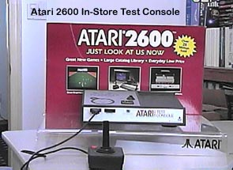

The Atari 2600 Test Console

Having problems with your joystick?
Your 2600 isn't turning on anymore and you need to check your power supply
before spending some big bucks on having your 2600 console serviced.
Well just run on down to your local Atari Authorized Dealer and walk up
to the Walk-Up Dealer Test Console. Atari sold these
consoles to its dealers to provide a quick and easy way for Atari 2600
owners to test their joysticks and power supplies to see if they needed
repair or replacement. Atari also sold a convenient display
stand with Atari joysticks, Paddles, Power supplies and other assorted
accessories for making your trip to the store quick and convenient and
of course to help boost additional sales.